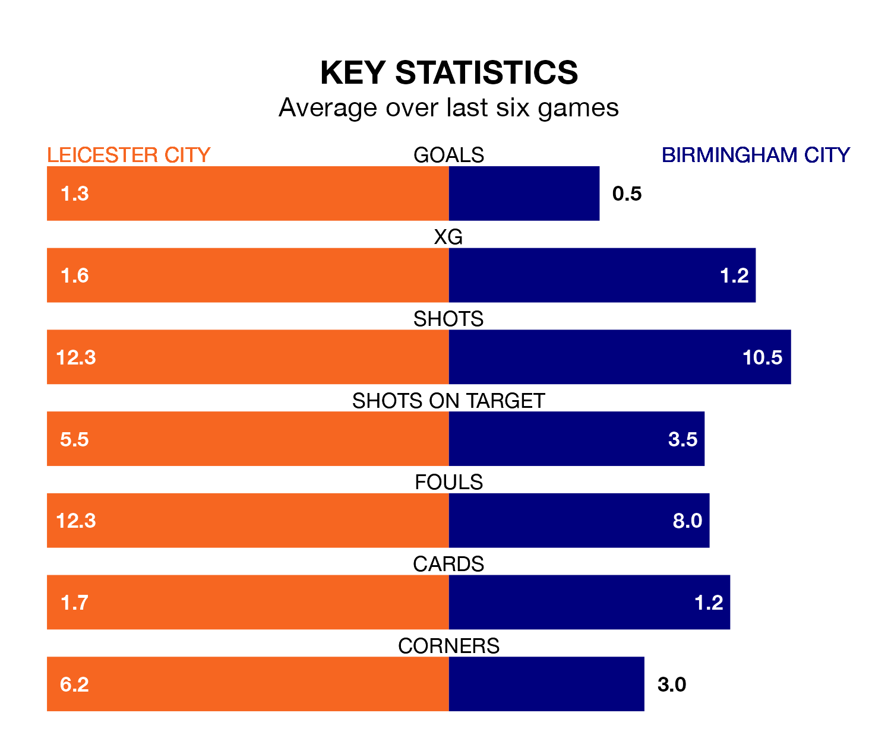

Leicester City are heavy favourites to keep all three points at home in Saturday's kick-off against Birmingham City.
The Foxes, who sit third in EFL Championship with 39 games played, are priced at 1.3 to seal victory at the King Power Stadium.
Sitting 17 places and 43 points behind them in the table, Birmingham are 7.3 to win with *Betting Company*, while the draw is at 5.2.
With 77 goals in 39 games so far this season, Leicester are the league's second-highest scorers with 2.0 goals per game. And they are conceding fewer than average, letting in 35 goals at a rate of 0.9 per game.
Birmingham, meanwhile, are below average scorers, with 1.1 goals per game, compared to a league average of 1.4. They have conceded 1.5 goals per game.
Leicester City are in mixed form in EFL Championship, with two wins and a draw from their last six games.
With a win and a draw over that period, Birmingham City's form is worse – they have taken four points from 18, compared to the Foxes' seven.
With Mads Hermansen between the sticks, the hosts can rely on one of the league's safest pair of hands. He has kept 12 clean sheets in his 38 appearances this season in EFL Championship.
In the Blues' net, John Ruddy has eight clean sheets in 38 games. He has conceded a goal every 68 minutes, 70% more often than the 118 minutes between goals for Hermansen.
Over the last two years, Leicester and Birmingham have played each other twice. Leicester won both of them.
Their last meeting was on January 27, when Leicester won 3-0 at home.
Leicester's last match was on Monday, a 3-1 win against Norwich City, with Jamie Vardy, Kiernan Dewsbury-Hall and Stephy Mavididi getting the goals for the Foxes.
Birmingham beat Preston North End 1-0 last time out, also on Monday, with Jay Stansfield on the scoresheet.
Saturday's match will be refereed by David Webb, who has taken charge of 27 EFL Championship games so far this season, issuing one red card and booking 104 players. He has awarded five penalties.
The last Leicester game Webb refereed was a 3-2 away win against Birmingham City on December 18. His last Birmingham match was their 1-0 loss away at West Bromwich Albion on February 3.
Updated: 16:41 (UTC), 04/04/24